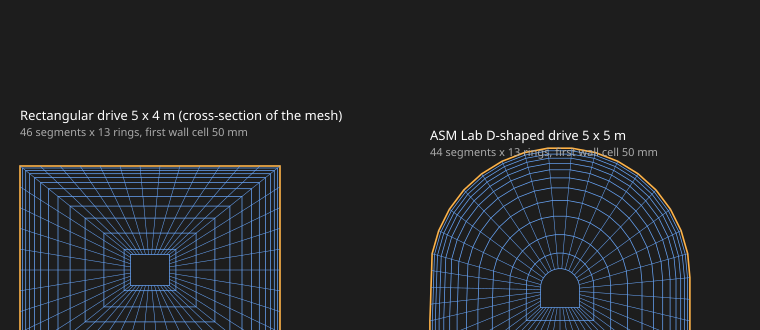

CFD
A mesh that follows the tunnel as it really is

The tunnel mesh is built from the tunnel itself. Its cross-section is swept along its centreline, so curves, slopes and changes of size are followed instead of being stepped in cubes.
Close to the wall the cells get thinner, so the wall is resolved where the flow changes fastest. The mesh checks its own geometry and closure, and can be written out as an OpenFOAM mesh.
What you get
- Square, arched and horseshoe sections
- Wall layers that grow outward
- Geometry and closure checks
- OpenFOAM mesh writer